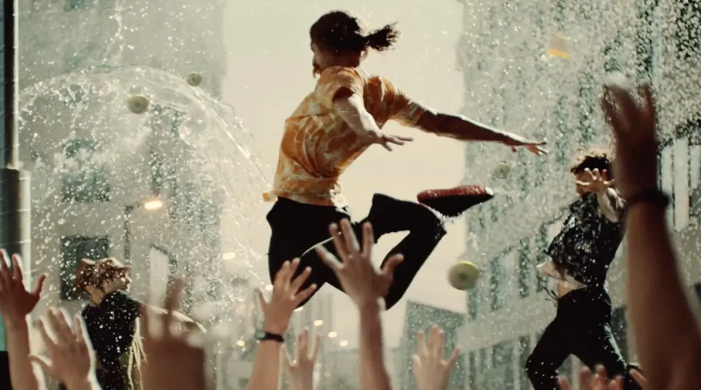
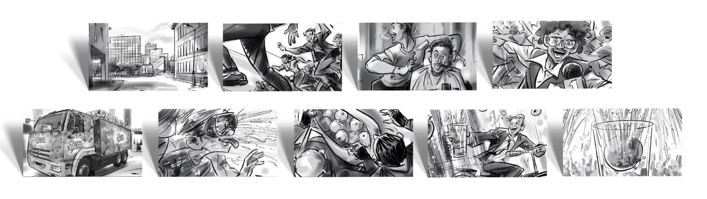

«Дары Кубани» находятся на территории традиционности вместе со своими прямыми конкурентами. Для усиления позиций бренду необходимо выделяться из клаттера обычных семейных соков и ориентироваться на более молодую аудиторию. При этом реклама должна быть понятна и интересна людям старше 35-ти лет.
Концепция «Праздник». Мы решили использовать в новом ролике «рекламную фишку» бренда с падающими яблоками и показать максимально широкую аудиторию. Референсом к ролику стал праздник «Томатина» в Испании, когда тысячи жителей и гостей Буньоля выходят на улицу, чтобы бросаться спелыми помидорами и получить море позитивных эмоций.

Продакшн – ОГУРЕЦ